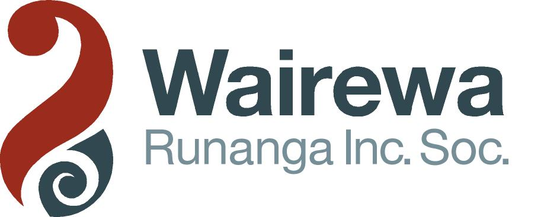

 www.kaitahu.org.nz/wairewa |
Sponsors Little River Cafe & Gallery R & R Sport Frontrunner and Little River Hotel |
www.rogaine.org.nz | |
| Wairewa Rogaine Little River, Banks Peninsula 6 hrs - Sunday 23rd July 2006 |
|||
| Download: | This Information (29KB PDF) and Entry Form (34KB PDF) |
Instructions to Competitors (29KB PDF) and Marae Protocol (16KB PDF) | |
| List of Entrants | |
| Times: | 8:30am welcome, registration and course planning. Start 10am |
| Site: | Wairewa Marae, Little River (on Main Road 1km past Little River Dairy/Cafe) |
| Terrain: | Hilly, some very steep. Most of the farmland is pretty "clean". There will also be some controls around the Little River village area and along the new Little River Rail Trail. |
| Map: | Pre-marked 1:50,000 with 20 m contours. Any out of bounds areas will be overprinted |
| Teams: | 2-5 persons. Men Open, Women Open, Mixed Open, Vet men, Vet Women, Vet Mixed, Junior (depends on numbers as to how many grades here) |
| Event fee: | Seniors $35, Juniors $10 – includes a hangi meal when you have finished. |
| Closing date for Entries: | Sunday 16th July. Late entries will not be accepted. No refunds after 16th July. |
| Cheques: | Payable to New Zealand Rogaining Association |
| Entry form and payment to: | Wairewa Rogaine C/- Tom Barnfield, 7 Merton Place, Christchurch 8005 Ph. (03) 352 0609 Mobile: 027 454 2403 Email: tom.barnfield@xtra.co.nz |
Confirmation of entry and further information will be sent out to entrants at the time of their entry. | |
General enquiries to: | Bruce Meder Ph. (03) 384 4701 Mobile: 027 242 7894 Email: brucemeder@xtra.co.nz |
Cancellation: | Only if conditions are extreme on the day. Organisers reserve the right to shorten the event before the start. (No entry fee refund if event cancelled). |
| Responsibility: | Neither NZRA nor the landowners accept liability for any accident or injury to participants during the event. The ‘team contact’ on the entry form must ensure all team members are aware that they participate at their own risk. |
Maori Language Week
This is a partnership event between NZRA and Wairewa Runanga to help celebrate Maori Language Week. Knowledge of te reo Maori (the Maori language) is not necessary, although some knowledge may enable you to collect bonus points. You'll be surprised at how much you do know (e.g. kai, haere mai, wai, puku, tangi etc).
Protocol: We will be working under the kawa (protocol) of Wairewa Marae and hence will be "doing as the Romans - in this case, the Maori - do". You will be welcomed by way of powhiri, so you will need to be prompt at the marae by 8.30am. You will also be farewelled and fed with a hangi meal when you have finished. There may also be a few spot prizes, so there are plenty of reasons to hang around.
| |||